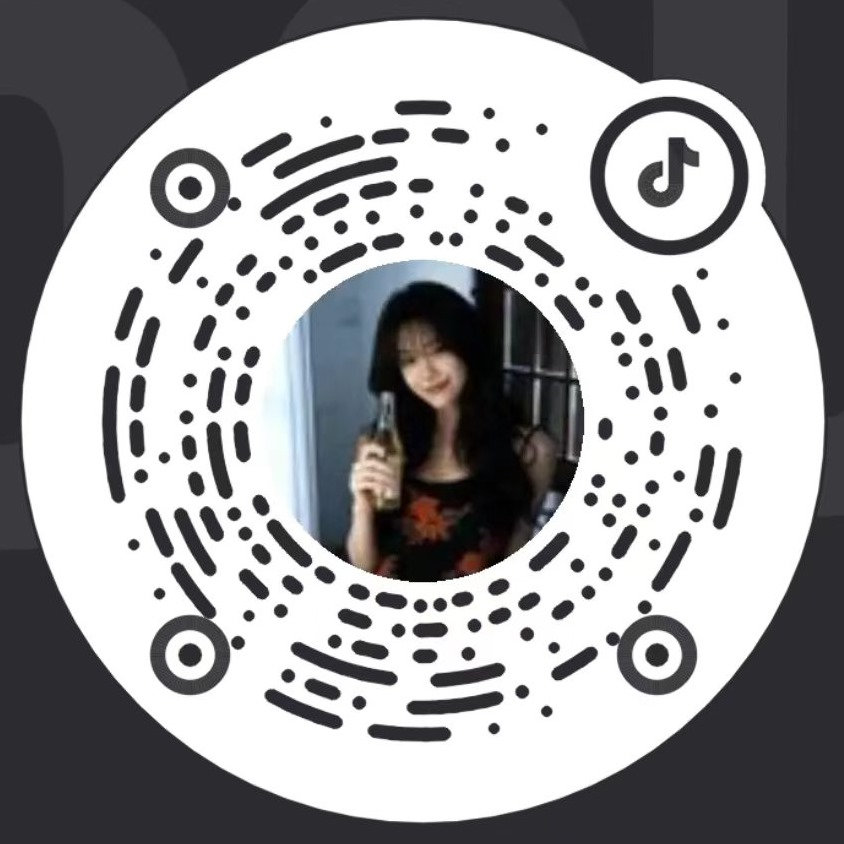

The Illusion Cabinet
动画分镜学徒，现沉迷 AIGC 的视觉炼金术士。
在思想的阁楼，创造属于自己的浪漫，收集那些转瞬即逝的幻觉，并把它陈列于此。
向下滚动
The Tarot Deck
九件作品，九张牌。点开任意一张，它会翻到正面，全屏放映，旁边是它的来历。
正在铺牌…
03 / About
我是刘昶红，可以叫我牧舒。动画专业出身，教过一年幼儿园，现在把大部分时间花在 AI 上——尝试使用 AI，表现自己的情绪。
AI 动画 / 影像
这个作品集里的九件作品，全部由 AI 生成——写脚本、生成画面、配音、剪辑，都是兴趣之作。写代码、做设计、剪片子，都是自己动手。
幼教 / 讲故事的
2025 年 9 月到 2026 年 6 月，在潮州市兰英第一幼儿园见习带班。《笔的三千年演化》就来自那段时间——给小朋友讲《毛笔发展史》时讲着讲着跑偏的那个脑洞。
没有情绪的画面，就像没有灵魂的躯壳。
迷恋繁复的细节，现在学着怎么「留白」。
像熬魔药一样去孵化想法，像切吐司一样利落地交付。
带班、备课、做教具；也是《笔的三千年演化》那个脑洞的来源。
用 AI 做动画、影像和网页，这个作品集里的九件作品都是这么来的。
带少儿绘画课，第一次意识到「讲清楚」比「画漂亮」难。
主修剧本与分镜，专业排名前 2%，连续三年奖学金。
广东传统文化动漫文创项目
3D 建模 + IP 形象 + 营销方案，从传统纹样一路做到可落地的角色 IP。
基于深度学习的医疗辅助诊断系统 · UI/UX
与中山大学眼科医院合作，负责界面与交互设计。获互联网+ 院赛一等奖、校赛金奖、省赛铜奖。
日常 Ps / Ae / Ai / Pr · AI 工具全链路 · 脚本 → 素材 → 剪辑
偶尔 Blender · Zbrush · Figma / HTML / CSS
不想承认 灵感来得比我快 · 字体排版 · 咖啡
大学英语四级 · 普通话二级甲等 · 高中美术教师资格证 · C2 驾照 · 志愿服务 104 小时 · 去过 20+ 城市
04 / Contact
有想法、有预算、或者只是想聊聊，都欢迎来信。
一般 48 小时内回复。
电话 / 微信 181 **** 4430
号码打码了——需要的话先邮件或抖音私信我，收到就回。
所在地 广东 · 潮州 · 可远程，也可当面聊。

抖音号 62401711439
私信和邮件都会回。
AI 动画 / 影像 · 品牌视觉（标识 / 包装 / 周边）· 网页设计与实现 · 画册与杂志排版 · 交互实验
你的故事是讲给谁听的？有没有喜欢的参考（或绝对不想看到的雷区）？以及，你的时间和预算范围。
「太小众 / 没人懂怎么办？」——没关系，我做过幼师，最擅长听懂奇奇怪怪的想法。
「为什么你的作品风格跨度这么大？」——因为我的灵感像个杂货铺。从传统国风到 Y2K 赛博，我都想试试看。不过别担心，它们最后都会被我收进同一个月亮口袋里。